01_pipeline
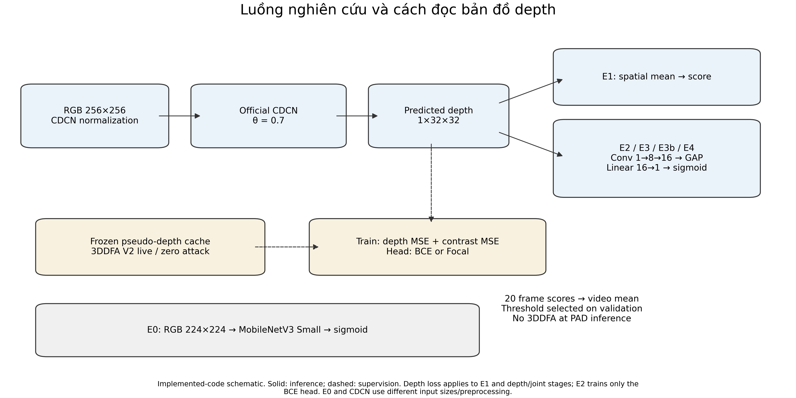
Implemented-code schematic. Solid: inference; dashed: supervision. Depth loss applies to E1 and depth/joint stages; E2 trains only the BCE head. E0 and CDCN use different input sizes/preprocessing.
One seed, CASIA development protocol. Captions and source CSV accompany every figure.

Implemented-code schematic. Solid: inference; dashed: supervision. Depth loss applies to E1 and depth/joint stages; E2 trains only the BCE head. E0 and CDCN use different input sizes/preprocessing.
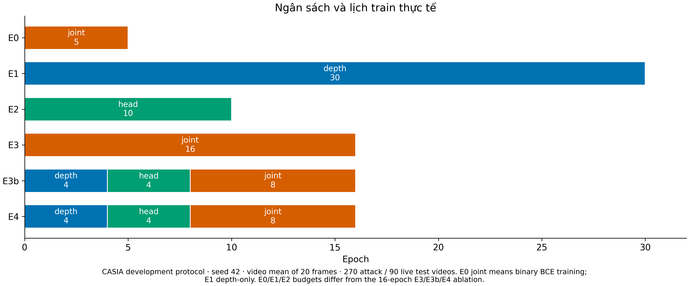
CASIA development protocol · seed 42 · video mean of 20 frames · 270 attack / 90 live test videos. E0 joint means binary BCE training; E1 depth-only. E0/E1/E2 budgets differ from the 16-epoch E3/E3b/E4 ablation.
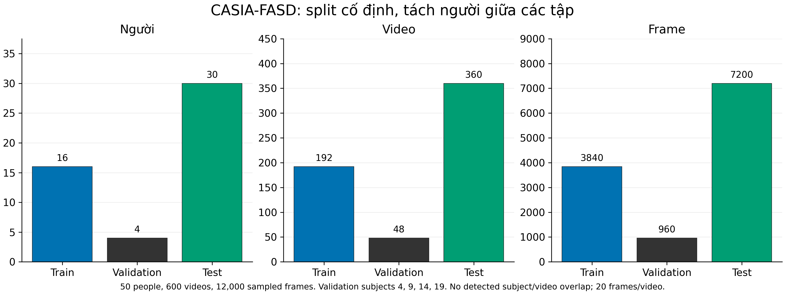
50 people, 600 videos, 12,000 sampled frames. Validation subjects 4, 9, 14, 19. No detected subject/video overlap; 20 frames/video.
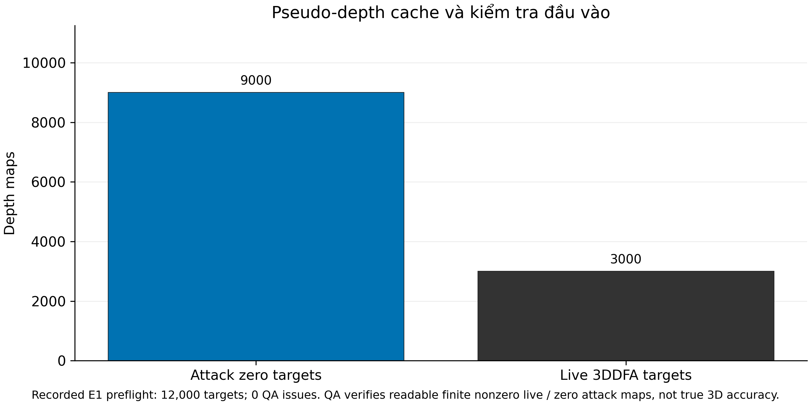
Recorded E1 preflight: 12,000 targets; 0 QA issues. QA verifies readable finite nonzero live / zero attack maps, not true 3D accuracy.
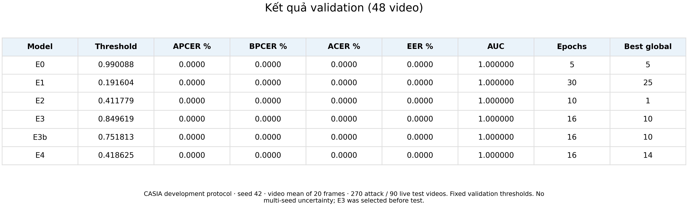
CASIA development protocol · seed 42 · video mean of 20 frames · 270 attack / 90 live test videos. Fixed validation thresholds. No multi-seed uncertainty; E3 was selected before test.

CASIA development protocol · seed 42 · video mean of 20 frames · 270 attack / 90 live test videos. Fixed validation thresholds. No multi-seed uncertainty; E3 was selected before test.

CASIA development protocol · seed 42 · video mean of 20 frames · 270 attack / 90 live test videos. All APCER values are zero in this sample. E1/E2 ACER 2.7778%; E3/E3b 5%; E4 4.4444%.

CASIA development protocol · seed 42 · video mean of 20 frames · 270 attack / 90 live test videos. ROC/AUC uses video ranking across thresholds; ACER uses each model's fixed validation threshold. Right panel is an explicitly labelled zoom.
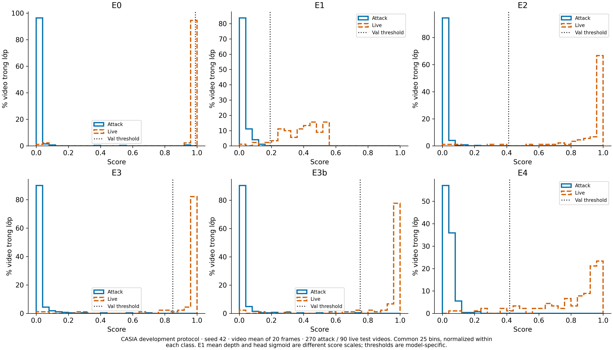
CASIA development protocol · seed 42 · video mean of 20 frames · 270 attack / 90 live test videos. Common 25 bins, normalized within each class. E1 mean depth and head sigmoid are different score scales; thresholds are model-specific.
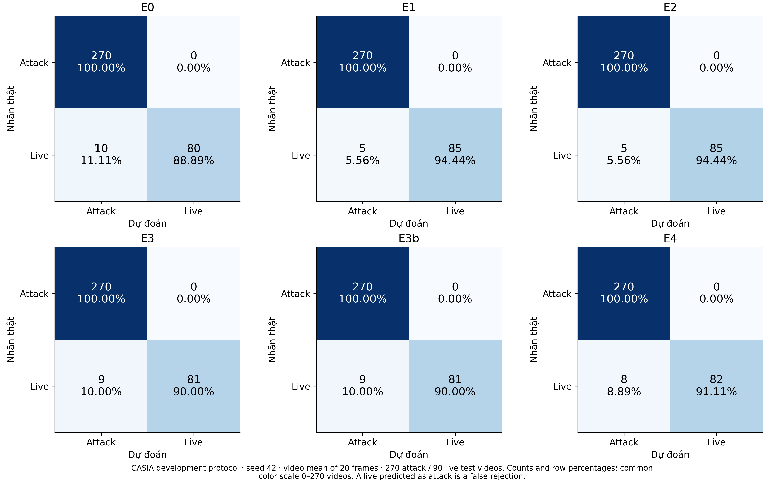
CASIA development protocol · seed 42 · video mean of 20 frames · 270 attack / 90 live test videos. Counts and row percentages; common color scale 0–270 videos. A live predicted as attack is a false rejection.
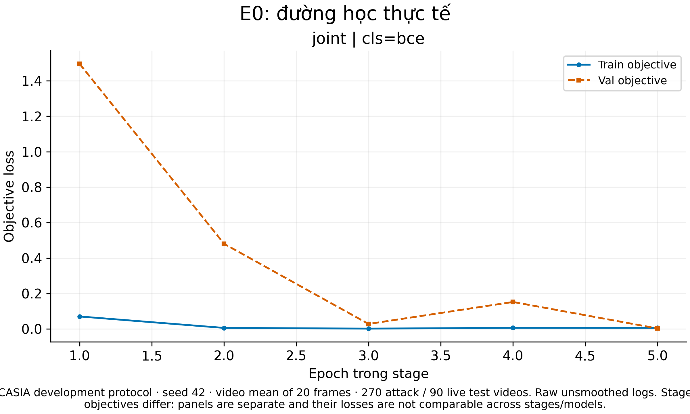
CASIA development protocol · seed 42 · video mean of 20 frames · 270 attack / 90 live test videos. Raw unsmoothed logs. Stage objectives differ: panels are separate and their losses are not comparable across stages/models.
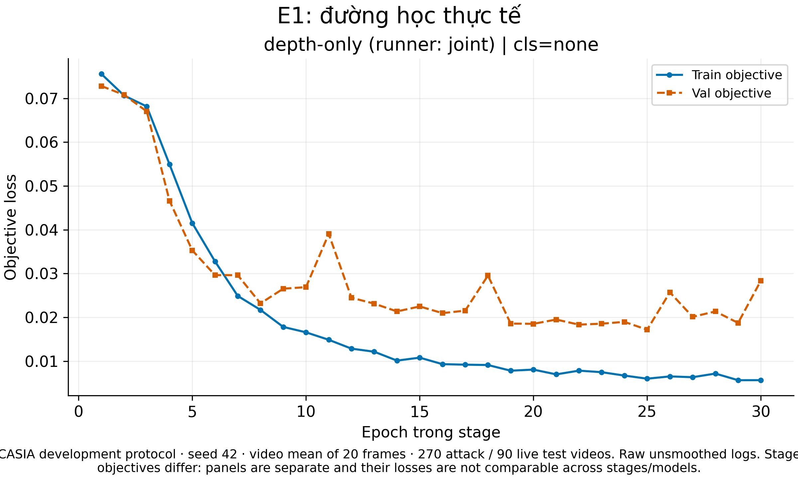
CASIA development protocol · seed 42 · video mean of 20 frames · 270 attack / 90 live test videos. Raw unsmoothed logs. Stage objectives differ: panels are separate and their losses are not comparable across stages/models.
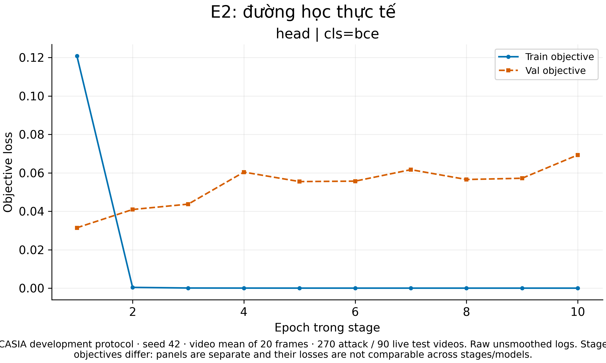
CASIA development protocol · seed 42 · video mean of 20 frames · 270 attack / 90 live test videos. Raw unsmoothed logs. Stage objectives differ: panels are separate and their losses are not comparable across stages/models.
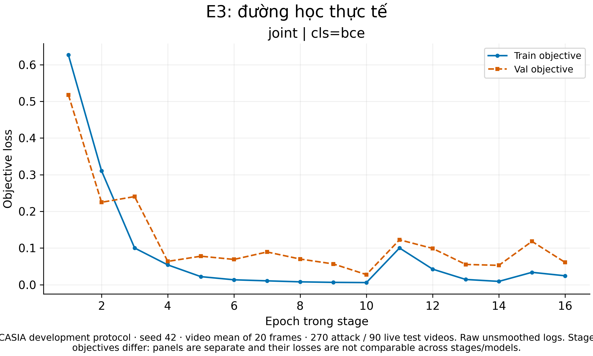
CASIA development protocol · seed 42 · video mean of 20 frames · 270 attack / 90 live test videos. Raw unsmoothed logs. Stage objectives differ: panels are separate and their losses are not comparable across stages/models.
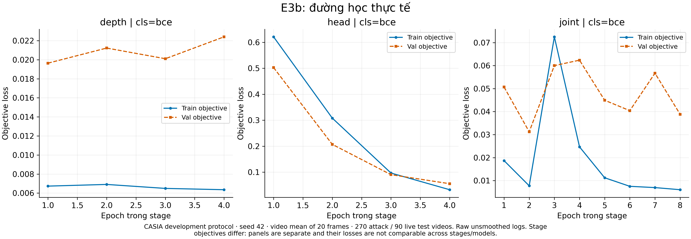
CASIA development protocol · seed 42 · video mean of 20 frames · 270 attack / 90 live test videos. Raw unsmoothed logs. Stage objectives differ: panels are separate and their losses are not comparable across stages/models.
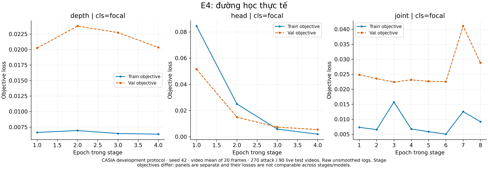
CASIA development protocol · seed 42 · video mean of 20 frames · 270 attack / 90 live test videos. Raw unsmoothed logs. Stage objectives differ: panels are separate and their losses are not comparable across stages/models.
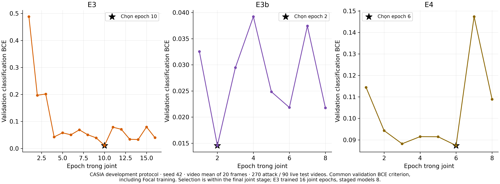
CASIA development protocol · seed 42 · video mean of 20 frames · 270 attack / 90 live test videos. Common validation BCE criterion, including Focal training. Selection is within the final joint stage; E3 trained 16 joint epochs, staged models 8.
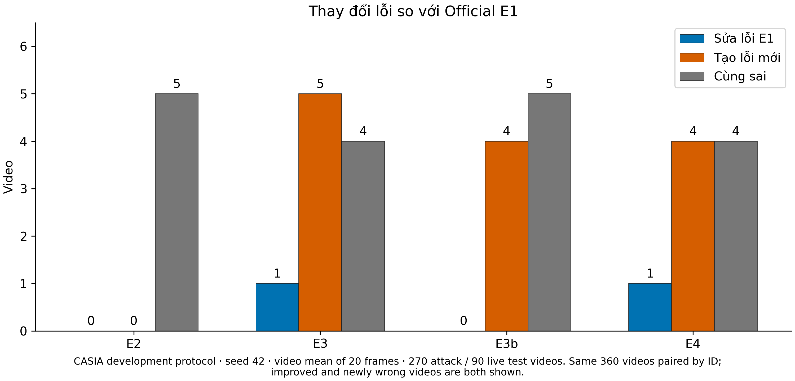
CASIA development protocol · seed 42 · video mean of 20 frames · 270 attack / 90 live test videos. Same 360 videos paired by ID; improved and newly wrong videos are both shown.

CASIA development protocol · seed 42 · video mean of 20 frames · 270 attack / 90 live test videos. Each quality group has 30 live videos. Bar labels are error counts. Quality is manifest metadata, not a new measured blur/lighting cause.

CASIA development protocol · seed 42 · video mean of 20 frames · 270 attack / 90 live test videos. Filtered to the union of error videos, all live in these runs; not the complete test set. × = false rejection, dot = correct.